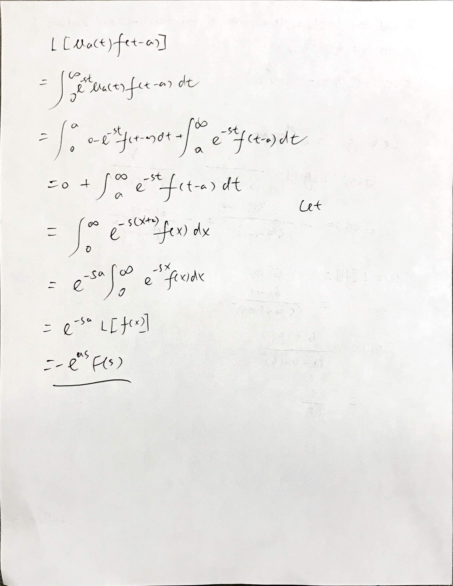
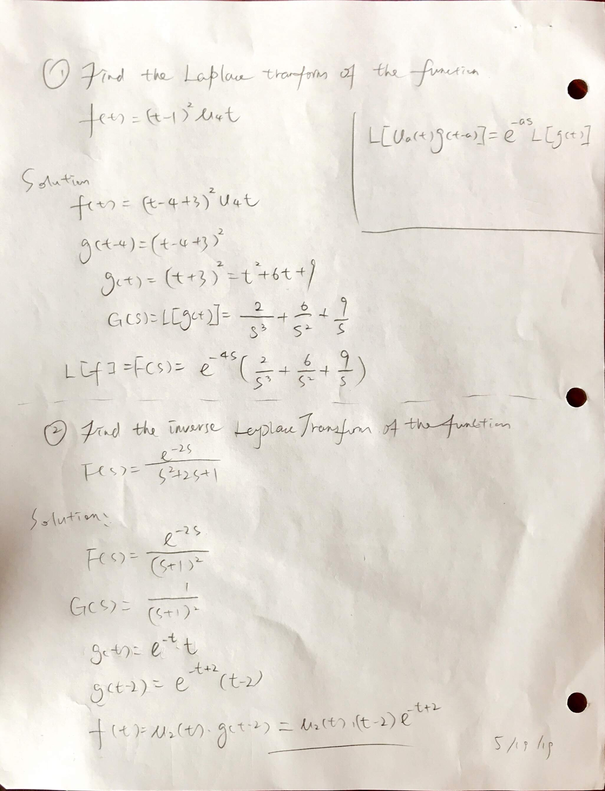
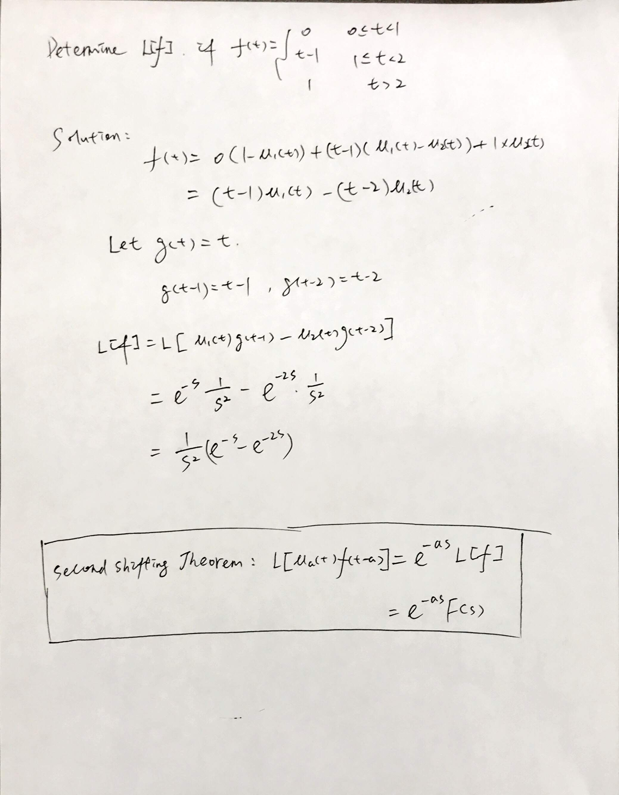

1007 The Second Shifting Theorem L[ua(t)g(t−a)]=e−asL[g(t)]=e−asG(s)\begin{aligned} L[u_a(t) g(t-a)] &= e^{-as} L[g(t)]\\ &= e^{-as} G(s)\\ \end{aligned} L[ua(t)g(t−a)]=e−asL[g(t)]=e−asG(s)  Homework 10.7 p.704 1-41 odd, 42-45 all (#45-book answer wrong)  